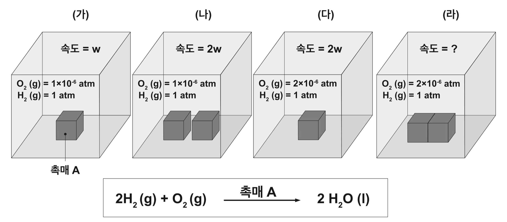

문제 1

그림 (가): 수소와 산소 기체를 반응시켜 물을 생성하는 고체 촉매 A가 있다. 온도와 부피가 일정하게 유지되는 상자 안에 정육면체의 촉매 A 한 개를 바닥에 두고 1 atm의 수소와 \(1 \times 10^{-6}\) atm의 산소를 채운 뒤 초기 반응 속도를 측정하니 \(w\)였다.
그림 (나): 동일한 촉매 2개를 서로 닿지 않도록 상자 바닥에 두고 실험을 진행했을 때 초기 속도가 \(2w\)로 측정되었다.
그림 (다): 촉매 1개와 산소의 부분압력이 \(2 \times 10^{-6}\) atm일 때 초기 속도가 \(2w\)로 측정되었다.
촉매 추가 과정에서 수소와 산소 기체의 압력 변화는 무시한다. 수소의 압력은 산소보다 훨씬 높아 반응 과정 중에 수소의 부분압력은 거의 변화하지 않는다. 반응이 진행되는 동안 온도 변화는 없다고 가정한다. 고체 표면이 서로 맞닿은 면에는 기체의 출입이 불가능하다고 가정한다. 촉매가 없을 때의 반응 속도는 무시할 만큼 작다.
(1) 그림 (라)처럼 촉매 2개의 옆면이 완전히 밀착되도록 나란히 두고 \(2 \times 10^{-6}\) atm의 산소와 1 atm의 수소를 채웠을 때 초기 속도를 예측하시오. [2점]
(2) 실제 실험 과정에서 산소 농도의 반감기가 시간이 지남에 따라 길어지는 것이 관측되었다면, 해당 반응의 속도 및 촉매의 효율을 증가시킬 방법을 제시하시오. 수단과 방법을 가리지 마시오. [3점]